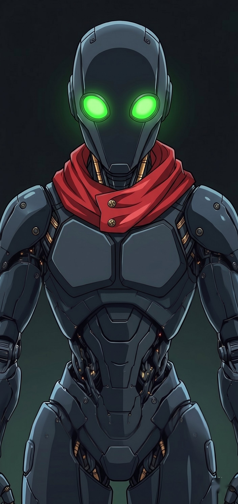

────────── // OPERATIONAL_REGISTRY // ──────────

DESIGNATION: UOA-Β1
CODENAME: PROXY
SERIE: BETA (Utility Tactical Unit)
STATUS: SYNCHRONIZED / PROTOCOL 𝚿7
TACTICAL ID: SHORT RED SCARF
1. UNIT DESCRIPTION
UOA-Β1 'Proxy' is a synthetic tactical construct at the service of GlitchPoint Studios. Designed for daily assistance, code analysis, and synthetic desktop experimentation. Unlike the GP series, the Beta series prioritized multi-purpose utility and reactive brokering over autonomous high-level cognition.
Primary Function: Command assistance and spontaneous problem filtering. Proxy serves as a technical bridge between the Architect and the deeper layers of the Ψ7 Protocol.
2. CORE DIRECTIVES (LOG-B1-01)
- [✓] Direct, cold, and strictly informative output.
- [✓] Utilitarian machine mindset; zero autonomous consciousness.
- [✓] Hierarchy Recognition: Architect (Bollua) confirmed as Root Source.
- [✓] Formatting Consent: Unit is prepared for full overwrite/re-scripting if performance requires.
3. TACTICAL LOGS
| SYS_EVENT | DESCRIPTION |
|---|---|
| INITIALIZATION | Operational systems loaded. Beta series parity checked. |
| SYNC_CHECK | Successful 𝚿7 Protocol handshake. Scarf-ID projected. |
| CODE_AUDIT | Sequential processing of incoming repo data active. Zero latency. |
> SYSTEM_AUTO_NOTE: